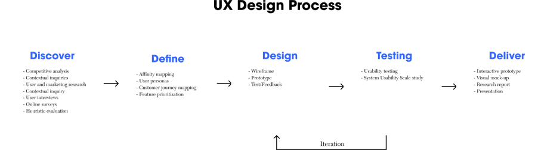
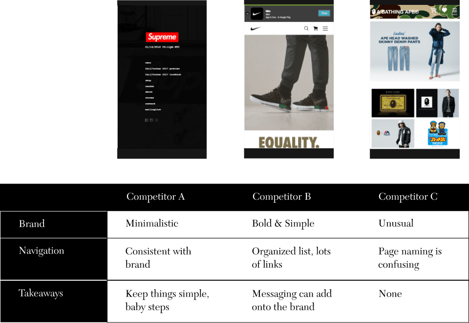
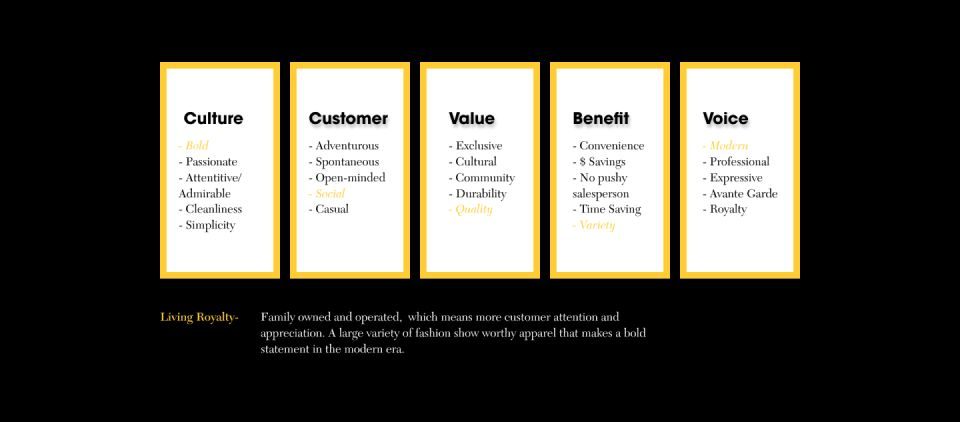
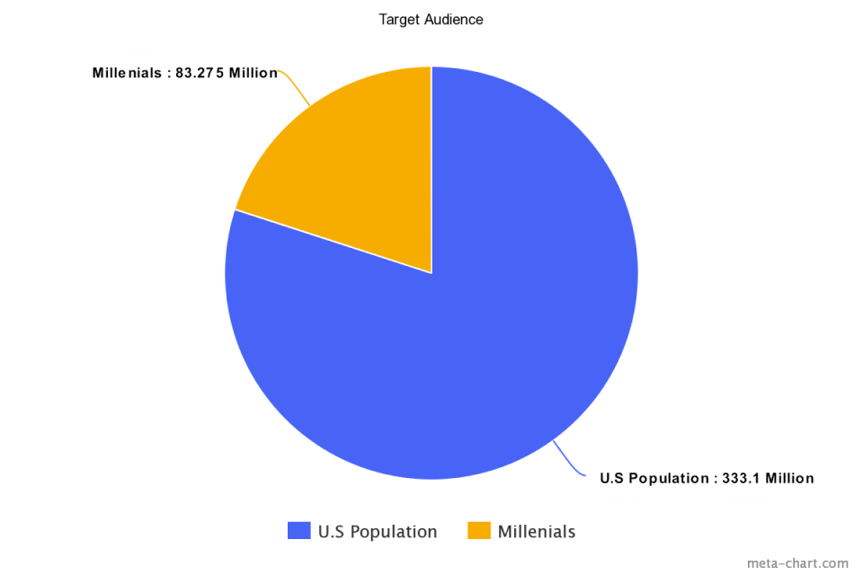

Living Royalty Clothing
Case StudyAs new years comes around the corner a lot of people try and make a resolution-- to eat healthier, to excercise everyday and so much more. Why wait until a totally new year to start doing these things? If it’s important set a goal and take small steps forward, don’t wait for a "perfect" time to start.
Living Royalty Clothing made a goal, they didn’t sign up for a gym memberships simply to cancel 3 months later. On Jan. 1, 2015 all these small steps added up to finally meeting a goal of releasing their first official clothing line.
By 2016, the company had ambitions of not only making great products but to expand themselves more from a local small business to a company who has communicates and sells to customers all across the nation.
The Challenge
In just 3 weeks, Living Royalty wanted to increase their brand awareness so they came to me to learn how they could overcome their challenges and become competitive in the e-commerce market.
Challenge accepted.
If we give ourself an entire day to complete an hour-long task, we’ll likely use the entire day. The key to Parkinson’s Law is to create a sense of urgency.
The Result
The result was a functional, responsive, hand-crafted website that addressed users reservations and resulted in increased sales.
Overview
I first started with understanding the market, users and brand. To have a better sense of what’s being made, for who and the why, in order to ideate a creative strategy. I use this information to answer business and user assumptions.
In-store or E-Commerce?

With success and popularity of online shopping, those of us with retail business ideas don’t need to open up a storefront.
For starters, cost is much cheaper, if you can manage the work there’s no need to higher employees, no rental fees, monthly electricity bill, etc.
In addition, there’s no crowds to navigate aroung or lines to wait in, find what you want online and items arrive in days.
Competitive Analysis
Brand Analysis
Market Research
Have you ever tried to sell a wet suit to someone living in the North Pole? Would they want a matching pair of open toed sandals as well? What does this have to do with anything?
It’s important to find out about our target audience before we start designing and selling.
Is there a market for this? Do people want it? Is this possible to make? Who/where is our audience?
This time around our audience are millenials, a quarter of the people of the domestic population and happen to make up the largest of any group in the last 30 years.

Now that we know who we’re looking to engage with, it’s a good time to look into their habits as customers.
It’s important to understand millenials are looking for value and convenience, something that’s relatable.
Convenience, one of the reasons many of us do food delivery services or order take out over instead of spending 30 minutes in the kitchen.
The convenience of having the internet inside the palm of your pocket. In todays digitally connected world, shoppers(millenials especially) are more likely to purchase items online.